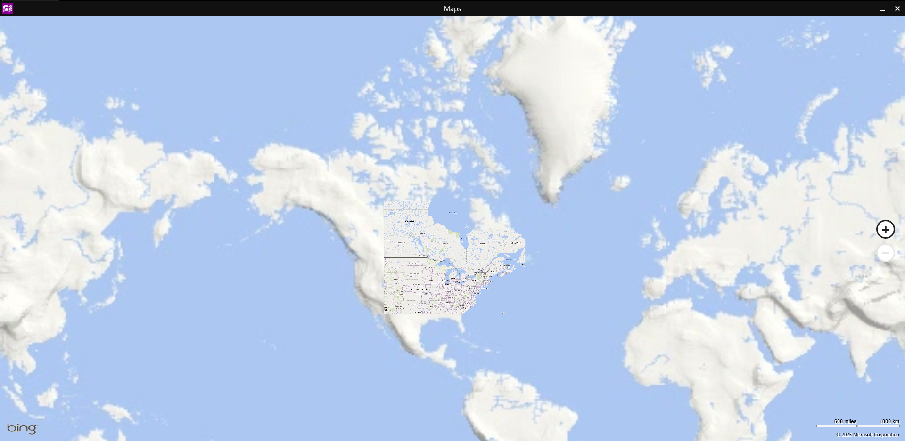

openmetro maps app
posted on august 15, 2025
I got the maps app working again due to one archive on the Wayback Machine.
Once giving it this data, it actually loads tiles from VirtualEarth, although it doesn't work perfectly.
By "not working perfectly", I mean it barely works... It only tries to load data for a little bit, then completely stops.
It also doesn't like to load the whole map for some reason, even if you start the app out of said portion or it's set as your home location.
I plan to fix this, but it's not a priority right now.